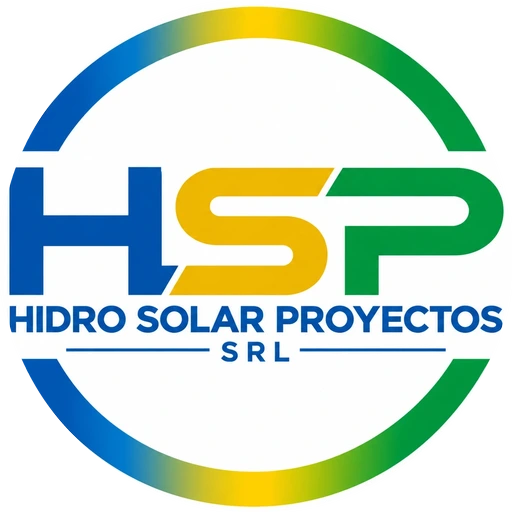
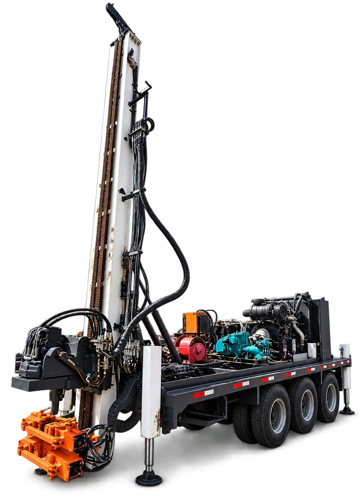
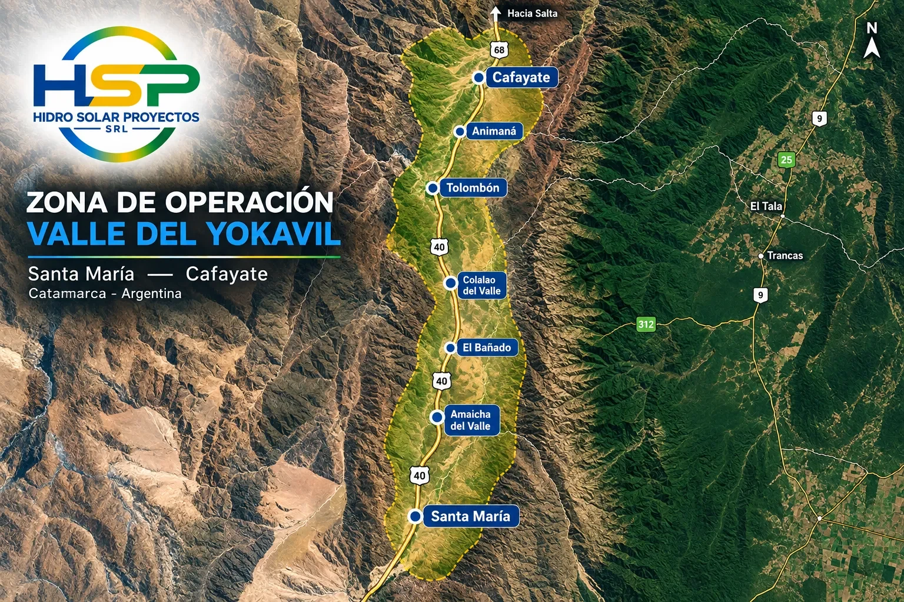
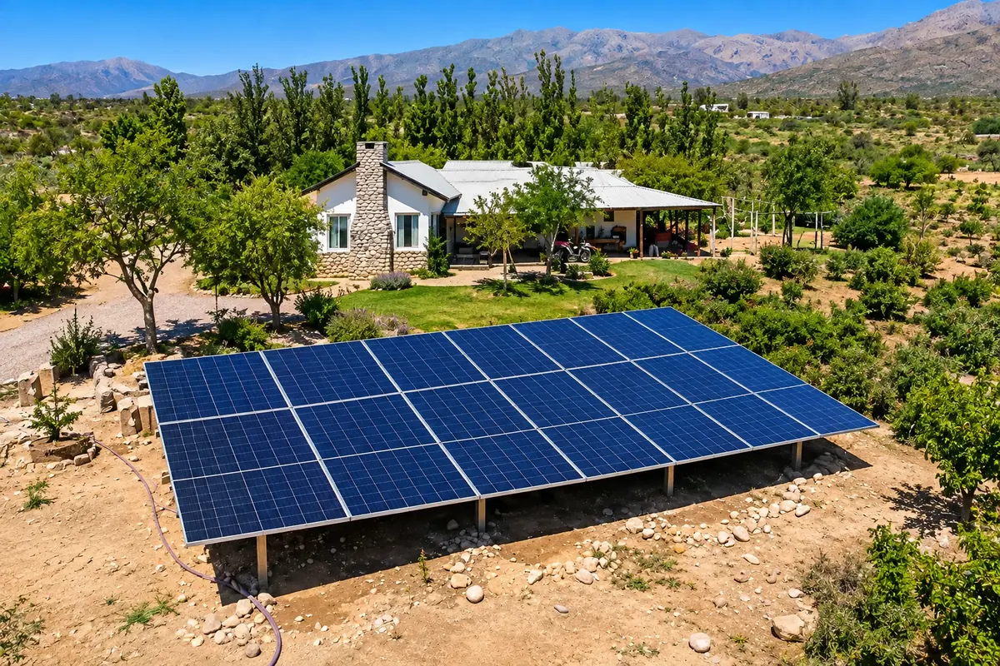

Perforación de pozos
Pozos de agua para consumo, ganadería y riego, con equipos propios montados sobre camión.

HIDRO SOLAR PROYECTOSVALLE DEL YOKAVIL
Perforamos, bombeamos y energizamos. Deslizá para ver cómo.
¿Querés paneles en tu casa y ahorrar en la luz? Ver hogares →DE LA ENERGÍA AL AGUA
La energía solar se convierte en el impulso que hace brotar el agua donde hace falta.
LO QUE HACEMOS 01
Un solo equipo para todo el ciclo del agua: encontramos el recurso, lo extraemos y lo movemos con energía limpia.
Pozos de agua para consumo, ganadería y riego, con equipos propios montados sobre camión.
Sistemas de bombeo alimentados por paneles, autónomos y sin costo de combustible.
Instalaciones solares residenciales y comerciales, diseñadas según tu consumo.
Proyectos de riego a medida para que el agua llegue a cada surco y cada cultivo.
NUESTROS EQUIPOS 02

EQUIPO 01 / 05
Equipo de perforación autopropulsado: mástil, bomba de lodo y motor sobre un mismo chasis para llegar a campos y parajes alejados.
CÓMO TRABAJAMOS 03
Cada pozo es un proyecto distinto. Acompañamos todo el recorrido, desde el primer estudio hasta que el agua sale con energía del sol.
Visitamos el lugar, analizamos la zona y definimos dónde y cómo perforar.
Llegamos con nuestro equipo y perforamos hasta alcanzar el acuífero.
Revestimos el pozo y lo limpiamos para asegurar un caudal estable y agua clara.
Instalamos bomba, paneles y control para que funcione sin combustible.
Producción, animales, hogares y comunidad. Y te seguimos acompañando.
PROYECTOS REALIZADOS 04

Obra destacada
Sistema solar rural para bombear agua lejos de la red eléctrica. Los paneles alimentan la bomba durante el día, sin combustible y sin costos de energía.
Quiero un proyecto así →ZONA DE OPERACIÓN 05
De Santa María, Catamarca, a Cafayate, Salta. En cada localidad del valle hay un pozo, una bomba o un sistema solar hecho por nosotros. Gente del lugar, trabajando para la gente del lugar.

ENERGÍA PARA HOGARES Y LOCALES
Instalamos paneles solares en casas y comercios, a la medida de tu consumo, para que ahorres en la factura de luz y dependas menos de la red. Sin perforaciones ni obras grandes: un sistema simple, en tu techo o tu patio.

QUIÉNES SOMOS 06
Hidro Solar Proyectos SRL es una empresa nacida en los Valles Calchaquíes. Nuestro conocimiento del territorio, sus desafíos y su gente nos permitió consolidarnos como referentes en soluciones de energía sustentable.
Creamos proyectos a medida para que el agua llegue más lejos, usando una energía que no se agota.
HABLEMOS DE TU PROYECTO